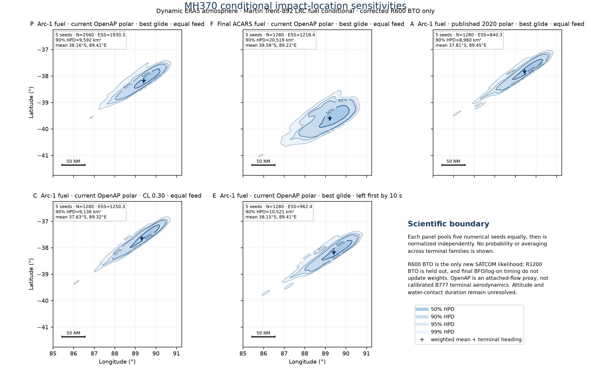
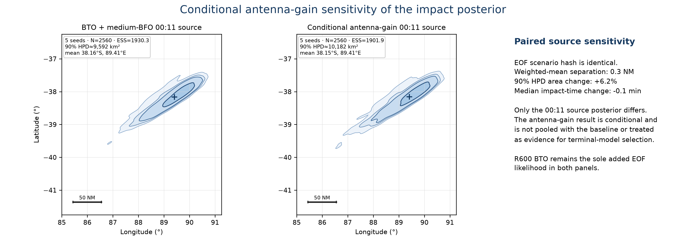

SVG · vector PDF · PNG

SVG · vector PDF · PNG

SVG · vector PDF · PNG

The terminal scenario is byte-identical at its scenario hash. Changing only the five-seed 00:11 source from medium BFO to the conditional antenna-gain posterior shifts the weighted impact mean by 0.3 NM. This is a conditional sensitivity, not a pooled estimate or terminal-family Bayes factor.
| Tag | Family | N / ESS | Fuel at 00:11 kg | L/R feed endurance s | Weighted mean | 90% HPD km² | Median impact UTC | Down m/s | Energy GJ | Distance NM |
|---|---|---|---|---|---|---|---|---|---|---|
| P | Arc-1 fuel · current OpenAP polar · best glide · equal feed primary conditional release proxy | 2560 / 1930.3 | 44.7 | 20.0 / 20.0 | 38.160°S, 89.409°E | 9,592 | 2014-03-08 00:37:49 UTC | 6.66 | 0.686 | 106.9 |
| F | Final ACARS fuel · current OpenAP polar · best glide · equal feed fuel-history sensitivity | 1280 / 1218.4 | 1190.7 | 784.8 / 784.8 | 39.580°S, 89.219°E | 20,519 | 2014-03-08 00:49:44 UTC | 6.65 | 0.672 | 193.8 |
| A | Arc-1 fuel · published 2020 polar · best glide · equal feed attached-flow aerodynamic sensitivity | 1280 / 840.3 | 44.7 | 20.0 / 20.0 | 37.814°S, 89.453°E | 8,980 | 2014-03-08 00:34:05 UTC | 7.68 | 0.594 | 86.0 |
| C | Arc-1 fuel · current OpenAP polar · CL 0.30 · equal feed uncontrolled-lift sensitivity | 1280 / 1250.3 | 44.7 | 20.0 / 20.0 | 37.629°S, 89.323°E | 9,136 | 2014-03-08 00:23:25 UTC | 13.14 | 1.707 | 75.0 |
| E | Arc-1 fuel · current OpenAP polar · best glide · left first by 10 s effective-feed chronology sensitivity | 1280 / 962.4 | 44.7 | 15.0 / 25.0 | 38.155°S, 89.414°E | 10,521 | 2014-03-08 00:37:49 UTC | 6.66 | 0.685 | 107.1 |
The HPD areas are descriptive KDE raster estimates for display, while every downstream composition must use the typed particle weights in the individual impact-posterior-handoff.json artifacts. The R600 log-evidence values are family-conditional normalizers and must not be interpreted as Bayes factors over these uncalibrated family choices.
machine summary · compact table · report manifest · artifact hashes